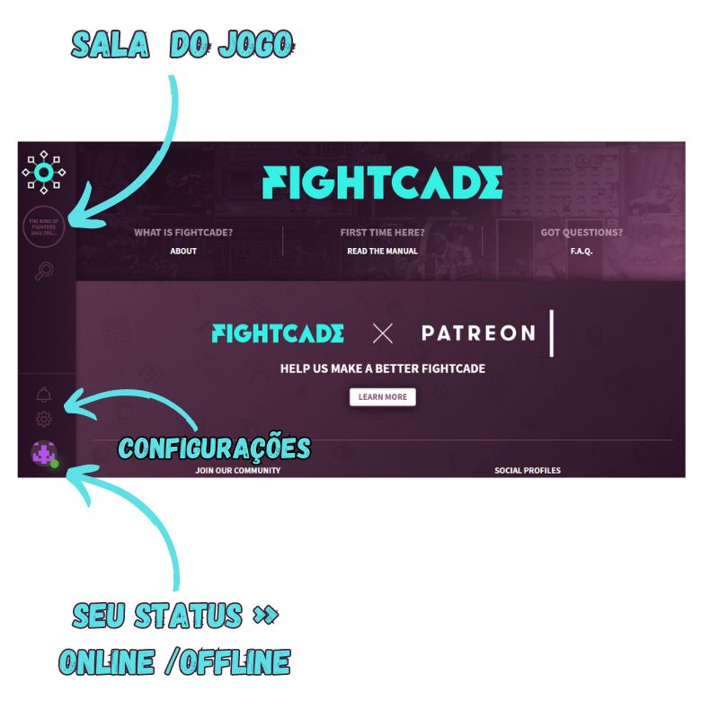
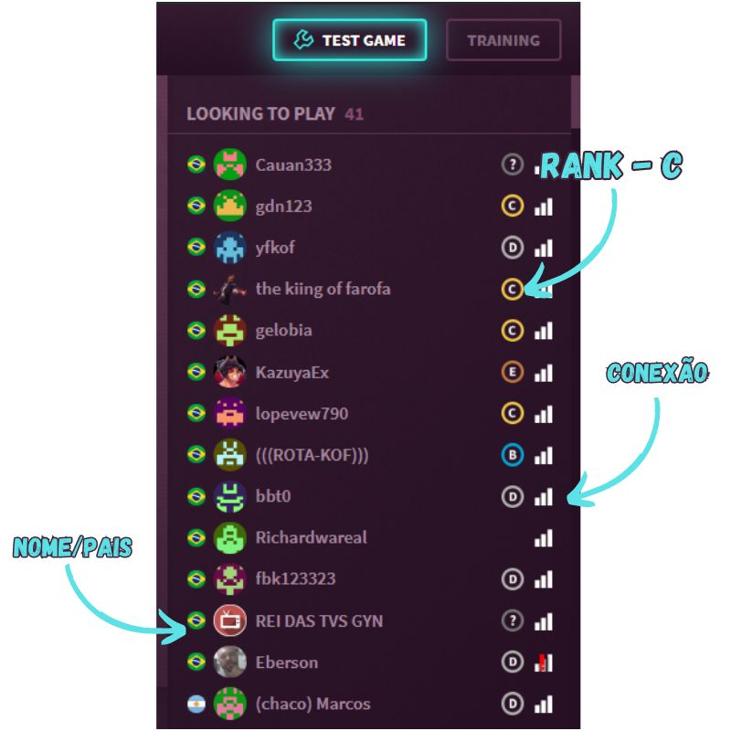
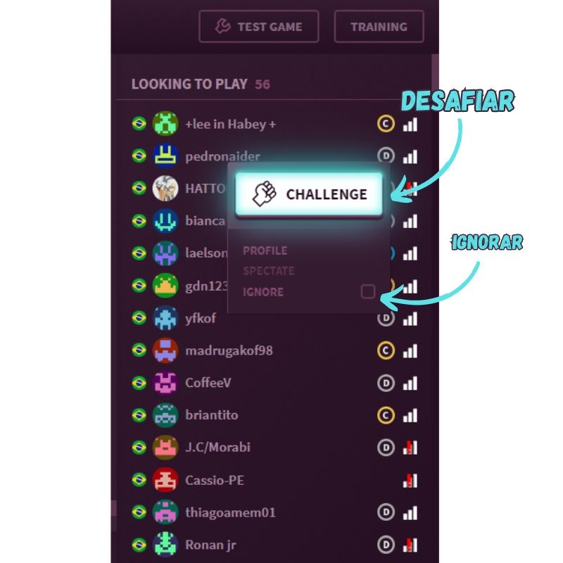
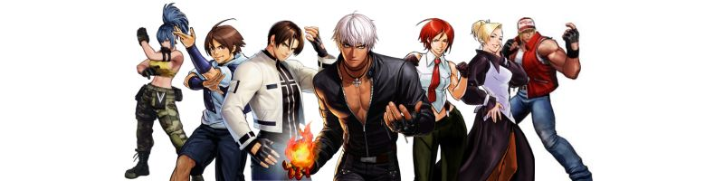

Tutorial
Como jogar online?
A melhor maneira de jogar jogos retro online é com o
Fightcade vem com uma implementação personalizada de GGPO e outras melhorias de emulador, tornando-o a melhor plataforma para netplay P2P baseado em rollback. Isto significa que jogos exigentes em termos de atraso de entrada e capacidade de resposta podem ser jogados na Internet com muito pouco atraso perceptível.
Instalando o FIGHTCADE
A instalação do FIGHTCADE é muito simples! Vou recomendar o vídeo do canal do MVEGETA, no qual ele ensina desde a instalação do programa até as ultimas configurações para que o FIGHTCADE rode liso em sua maquina.
O que fazer depois?
Após a instalação e configuração do programa será necessario criar um usuario com email e senha. Fique tranquilo, pois é muito rápido e pratico.
Depois de criar o seu login, você vai ver se deparar com uma tela que está na imagem abaixo. No canto esquerdo da tela vai estar a sala de jogos onde você vai poder desafiar seus openentes. Na parte inferior no canto esquerdo vai estar o seu status (online/offline), barra de configurações e notificações
Quando a sala de jogos for acessada, você podera jogar contra outros adversarios, contra a maquina e também praticar. Uma dica importante é deixar o seu status off quando estiver jogando contra a maquina ou praticando, pois assim não tem como outros jogadores te desafiarem e você consegue jogar tranquilamente sem ficar recebendo notificações. A imagem abaixo indica onde cada uma dessas opções ficam.

há algumas informações interressantes dentro da sala. Você poderá ver o nome do oponente e o seu Pais. Na frente do nome do jogador tem o seu RANK que vai de A até E, sendo o rank A os melhores, ou seja, desafiar esses jogadores é surra na certa. Note que na frente do RANK tem o sinal de conexão do jogadore e caso tenha um ponto de exclamação vermelho sobre o simbolo quer dizer que o oponente usa uma conexão sem fio, o que não é recomendado pelos desenvolvedores porque pode causar atrasos e sabemos que lag em jogos são horriveis, ainda mais durante um desafio.
Para desafiar um oponente é necessario levar a seta do mouse até o nome dele e apertar o botão direito do mouse sobre ele e escolher a opção challenge e selecionar o número de partidas FT.O FT significa número de vitoria de um dos oponentes,exemplo: Se você escolher FT3, quer dizer que o primeiro oponente a vencer 3 partidas é o vencedor, ou seja, em um FT3 poderá ter um total de 5 partidas que seria 3 x 2
Se quiser ver o perfil do seu adversario clique em profile que está abaixo de challenge. Após clicar será aberta uma pagina na internet mostrando informações sobre este adversario, como por exemplo quantas horas ele já jogou e o replay de suas lutas.
